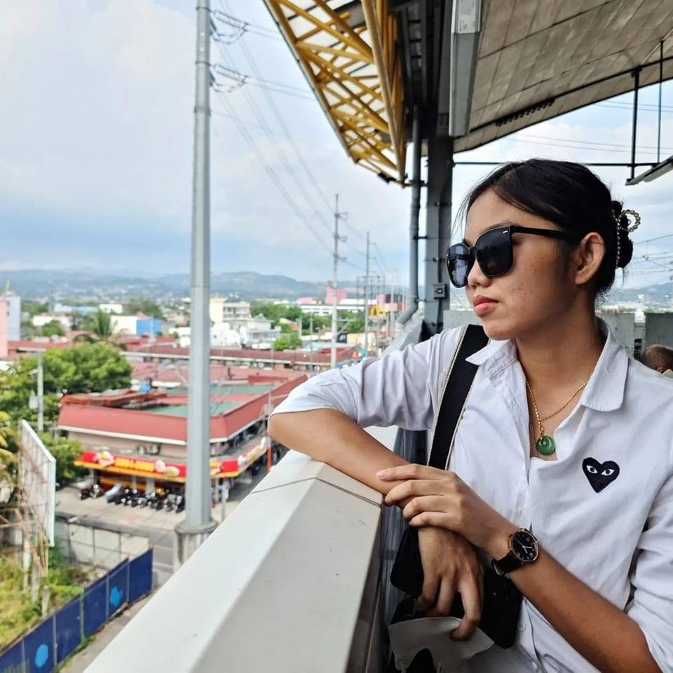

Hello, I'm Jade
3rd Year BSIT Student | Front-End Developer Aspirant
I am a Bachelor of Science in Information Technology student at the Polytechnic University of the Philippines with a strong foundation in both software development and visual storytelling. My technical toolkit includes Java, Python, SQL, and web development using HTML, CSS, and JavaScript, alongside hands-on experience with MySQL Workbench and VSCode. Beyond writing code and crafting digital interfaces, I bring projects to life through event photography, video documentation, and social media management for my local community in Barangay San Roque. I thrive at the intersection of technical problem-solving and creative design.
Projects
Linkup PUP
Social Media Platform for PUP Student Organizations(Figma Mockup)
- Designed and developed a specialized social media platform to centralize and showcase all ongoing and upcoming student organizations at PUP, Sta. Mesa.
- Integrated community sharing features including algorithmic feeds and posts by student leaders to foster engagement.
- Incorporated short-form video reels to highlight relevant events, achievements, and the organizational culture as a whole.
Education
Polytechnic University of the Philippines
2024 - Present | BS Information Technology | Dean's Lister
- Relevant Coursework: Human-Computer Interaction, Object-Oriented Programming (Java), Information Management (Database/ERD Design), Network Administration (Cisco).
Work Experience
Secretariat Member - Office of Rep. Stella Quimbo
2025 - Present | Government Internship Program
- Provided administrative, documentation, and operational support during official activities, demonstrating strong organizational, coordination, and process management skills.
- Assisted in handling digital records, reports, and internal communications, to support efficient office operations.
- Managed and maintained the local database for Rep. Stella Quimbo’s team in Barangay San Roque, Marikina City, ensuring data accuracy, proper organization, and strict confidentiality.
Database & Census System Administrator
Barangay San Roque, Marikina City
- Managed and maintained the local database and census information system, ensuring accurate data entry, data integrity, and secure record-keeping.
- Organized, updated, and validated large datasets to support barangay planning, reporting, and decision-making.
- Implemented data confidentiality and privacy practices, handling sensitive personal information responsibly and in compliance with data protection standards.
Social Media & Digital Content Handler
Barangay San Roque, Marikina City
- Managed and maintained the barangay’s official social media pages, ensuring timely posting, audience engagement, and accurate dissemination of information.
- Monitored digital interactions, analyzed engagement metrics, and optimized content strategies to improve reach and community communication.
- Utilized digital tools and platforms to organize, schedule, and track content, demonstrating proficiency in online platforms, data analytics, and digital communication technologies.
Photographer
Barangay San Roque, Marikina City
- Documented official events and community programs, managing digital files, photo archiving, and content organization for official records and publications.
- Supported the barangay’s digital presence by producing high-quality visual documentation for reports, social media, and official materials.
Leadership & Affiliations
Documentation Co-Lead
Google Developer Groups (GDG) on Campus PUP | 2025 – 2026
Marketing Department—Content Strategist & Video Director
Cisco NetConnect PUP | 2026 - present
Web Development Department Member
AWS Cloud Club PUP-Manila | Late 2025 – Present
Registered Volunteer
Developers Connect Philippines (DEVCON)
Sanggunian ng Kabataan (SK) Aspirant
2026
- Served as Project Head alongside co-head Bien for the first-ever Little Miss San Roque pageant, overseeing project planning, coordination, program development, and candidate management.
- Served as the sole speaker responsible for delivering the event's welcoming remarks.
- Engaged in youth-oriented community initiatives and local civic activities.
- Participated in community programs and youth engagement efforts focused on public service and barangay development.
Music Ministry Head
YFC East B7B | 2019 - Present
- Led and coordinated team activities, mentoring members and managing events.
Technical Toolkit
Project Management
UI/UX Prototyping (Figma)
Web Dev (HTML, CSS, JS)
OOP (Java, Python)
Legacy Systems (COBOL)
Database Management (MySQL)
Network Admin (Cisco Packet Tracer)
Digital Content Management
VSCode Environment